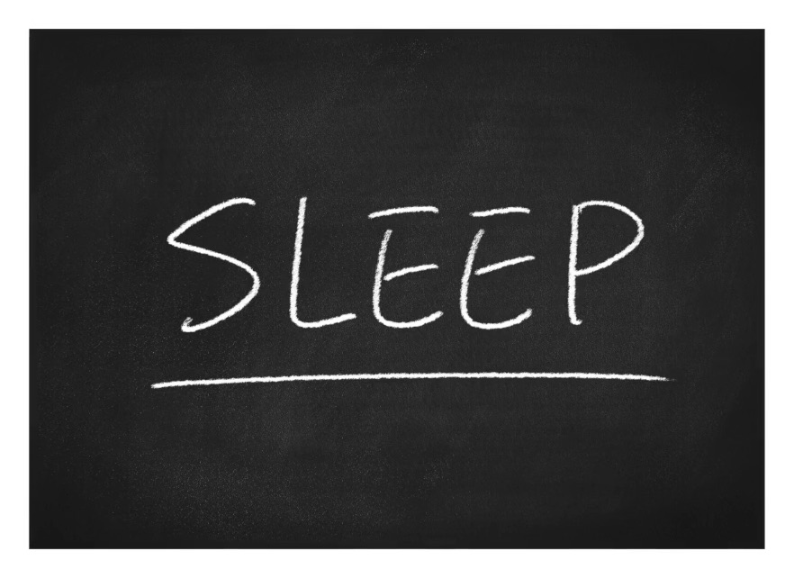
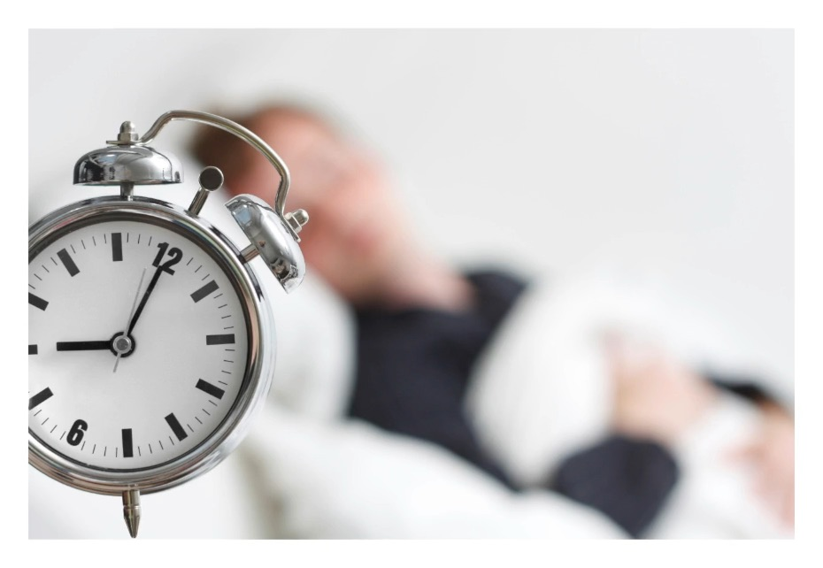
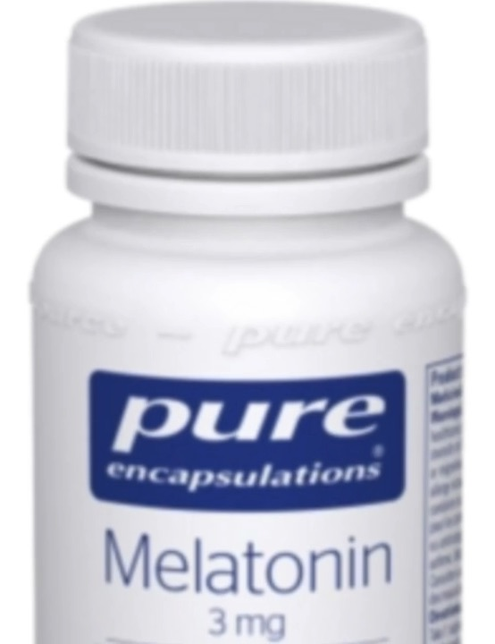
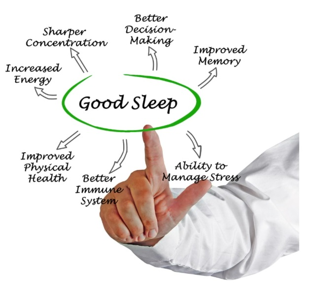
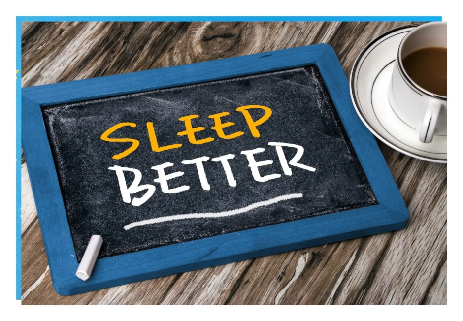

Home · Module 4 · Sleep SupportModule 4 · Mieux dormir
Module 4 · Sleep SupportModule 4 · Mieux dormirGood Sleep Is a Reachable DreamUn bon sommeil est un rêve accessible
Welcome to Module 4. Good sleep is a reachable dream — in this module you’ll learn about sleep and Parkinson’s, and build a routine that helps you rest better.
Press play to listen to Christine. The pictures change as she talks — tap any picture below the player to jump to that part.





Talk to your care team
This lesson is for education only and isn’t medical advice. Check with your doctor, neurologist or pharmacist before starting a supplement (such as melatonin) or making a big change to your medication.
In this module
- Sleep & Parkinson’s — understand sleep with Parkinson’s.
- 8 Steps for Better Sleep — practical habits for a better night.
- Wind-Down Session — a 30-minute relaxation to get you ready for bed.
- Your Sleep Schedule — track your sleep and build a steady routine.
Your action this week
Listen to Christine’s introduction, then take a moment to notice how you’re sleeping right now. You’ll build on it through the rest of this module.
Bienvenue au module 4. Un bon sommeil est un rêve accessible — dans ce module, vous en apprendrez plus sur le sommeil et la maladie de Parkinson, et vous bâtirez une routine qui vous aide à mieux vous reposer.
Appuyez sur lecture pour écouter Christine (en anglais). Les images changent au fil de ses propos — touchez une image sous le lecteur pour aller à ce passage.
Parlez-en à votre équipe de soins
Cette leçon est offerte à titre éducatif seulement et ne remplace pas un avis médical. Consultez votre médecin, votre neurologue ou votre pharmacien avant de commencer un supplément (comme la mélatonine) ou de modifier de façon importante votre médication.
Dans ce module
- Le sommeil et la maladie de Parkinson — comprendre le sommeil avec la maladie de Parkinson.
- 8 étapes pour mieux dormir — des habitudes pratiques pour de meilleures nuits.
- Séance de détente — 30 minutes de relaxation pour vous préparer au sommeil.
- Votre horaire de sommeil — suivez votre sommeil et bâtissez une routine régulière.
Votre action de la semaine
Écoutez l’introduction de Christine, puis prenez un moment pour observer comment vous dormez en ce moment. Vous bâtirez là-dessus tout au long de ce module.